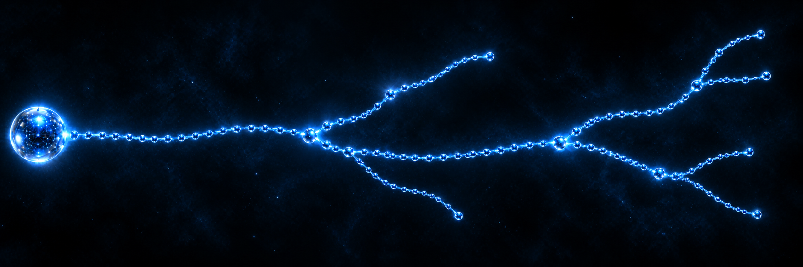

03 / BRANCHES
Branches are not separate worlds
Numerous branches extend from each Central Plan. Travel along a branch is sequential: each transition leads to the neighbouring Plan.
Different branches are connected through the Zero Plan. This gives the Zero Plan a special role in the known system: it is both a Central Plan and a connection point between branches.
A branch, schematically
Central Plan
sphere centre
sphere centre
→
Plan 1
neighbouring
neighbouring
→
Plan 2
neighbouring
neighbouring
→
Plan 3
farther away
farther away
